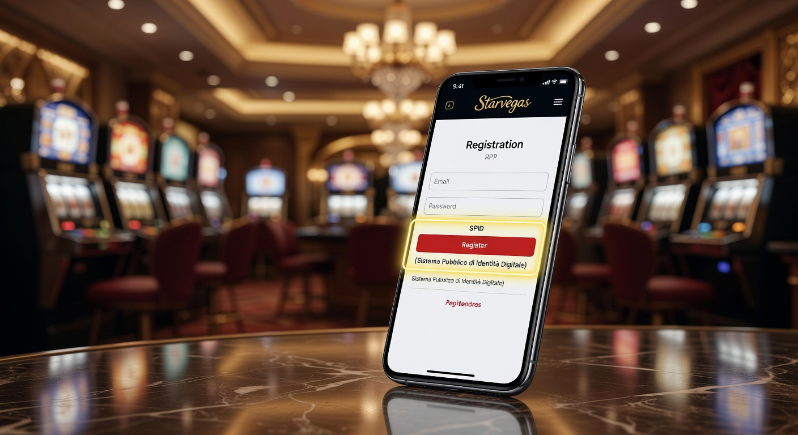
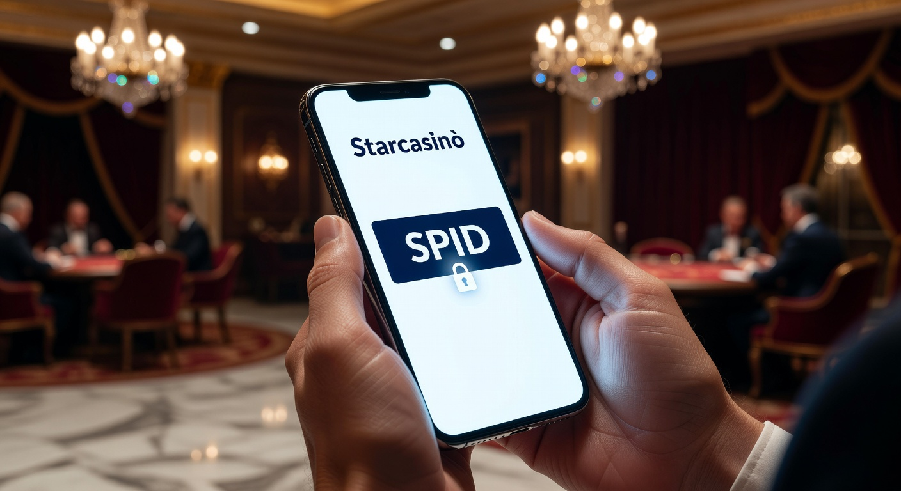
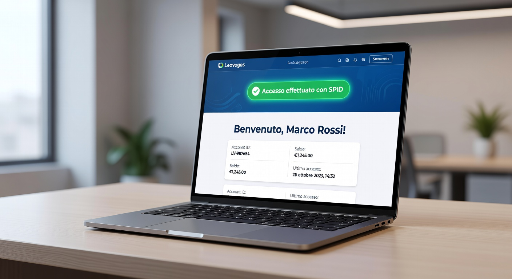

Guida completa al casino registrazione spid nel 2026: Sicurezza e velocità
Il panorama del gioco d'azzardo digitale in Italia ha subito una trasformazione radicale nel corso dell'ultimo biennio. Entrati pienamente nel 2026, l'integrazione dei sistemi di identità digitale ha ridefinito gli standard di accesso alle piattaforme di gaming online. La procedura di casino registrazione spid non è più una semplice opzione innovativa, ma rappresenta oggi il metodo preferenziale per migliaia di utenti che cercano immediatezza e protezione dei dati personali. Grazie alla collaborazione tra l'Agenzia delle Dogane e dei Monopoli (ADM) e i principali Identity Provider, il processo di onboarding è diventato istantaneo, eliminando le lunghe attese per la verifica dei documenti cartacei.
Adottare un sistema di casino registrazione spid significa abbracciare un protocollo di sicurezza di alto livello. Nel 2026, la tecnologia SAML 2.0 e i nuovi standard di crittografia end-to-end assicurano che lo scambio di informazioni tra il cittadino e il concessionario avvenga in un ambiente protetto. Questa evoluzione ha permesso di abbattere drasticamente i casi di furto d'identità e di gioco minorile, garantendo un ecosistema ludico più sano e trasparente. Molti operatori offrono ora incentivi specifici per chi sceglie questo metodo, rendendo l'esperienza non solo più sicura, ma anche economicamente vantaggiosa.
La semplicità d'uso è il pilastro su cui si fonda il successo della casino registrazione spid. In un mercato IT sempre più orientato all'esperienza utente (UX), la possibilità di completare l'iscrizione in meno di sessanta secondi è un fattore competitivo determinante. Non è più necessario scansionare la carta d'identità o attendere giorni per l'approvazione del profilo; l'autenticazione tramite l'applicazione del proprio provider (come PosteID, Aruba o Sielte) comunica istantaneamente tutti i dati necessari al casinò. In questo articolo esploreremo i migliori operatori che nel 2026 guidano questa rivoluzione digitale.
Oltre alla velocità, l'integrazione dello SPID favorisce una maggiore responsabilità sociale. I sistemi di autoesclusione trasversale gestiti da ADM dialogano perfettamente con l'identità digitale, permettendo un monitoraggio in tempo reale dei comportamenti a rischio. Per approfondire il funzionamento tecnico dell'identità digitale in Italia, è possibile consultare la pagina dedicata su Wikipedia, dove vengono spiegati i protocolli di sicurezza alla base del sistema. Questa trasparenza è ciò che differenzia i siti legali italiani dai casino online stranieri che accettano italiani, i quali spesso non possono offrire lo stesso livello di integrazione istituzionale.
Snai
Snai si conferma nel 2026 come il leader indiscusso nell'adozione di nuove tecnologie per il betting e il gaming. L'implementazione del sistema di casino registrazione spid su questa piattaforma è stata progettata per essere la più fluida del mercato. Una volta atterrati sulla home page, l'utente può selezionare l'opzione di accesso rapido che sfrutta lo SPID, evitando la compilazione manuale di decine di campi nel form di iscrizione. Questo approccio ha ridotto il tasso di abbandono durante la fase di registrazione del 45% rispetto ai metodi tradizionali.
Il successo di Snai risiede anche nella capacità di premiare l'innovazione. Chi effettua la casino registrazione spid riceve spesso pacchetti di benvenuto potenziati. Nel 2026, la piattaforma ha introdotto un sistema di validazione biometrica integrato che lavora in sinergia con l'identità digitale, garantendo che ogni accesso sia effettuato esclusivamente dal legittimo proprietario del conto. La stabilità dell'infrastruttura IT di Snai permette di gestire migliaia di autenticazioni simultanee senza rallentamenti, un aspetto cruciale durante i grandi eventi sportivi o il lancio di nuove slot machine.
Un altro aspetto fondamentale riguarda l'assistenza clienti. Snai ha dedicato un intero reparto tecnico al supporto per le problematiche relative all'identità digitale. Sebbene il processo di casino registrazione spid sia estremamente lineare, la presenza di una guida in tempo reale aumenta la fiducia degli utenti meno esperti di tecnologia. Questo livello di servizio posiziona Snai ai vertici delle preferenze degli italiani, distanziandola dai casino online esteri che non dispongono di canali diretti con i provider d'identità italiani.
Il catalogo giochi di Snai nel 2026
La varietà dell'offerta di Snai non teme confronti. Con oltre 3.000 titoli disponibili, tra slot machine, tavoli live e poker room, il divertimento è assicurato per ogni tipologia di giocatore. L'utilizzo della casino registrazione spid garantisce l'accesso immediato a tutte le aree del sito, incluse quelle a partecipazione limitata o con jackpot progressivi elevati. La fluidità del software, aggiornato alle ultime versioni del 2026, permette caricamenti rapidi anche su dispositivi mobili non più giovanissimi.
Promozioni e fedeltà su Snai
Oltre al classico bonus di benvenuto, Snai ha sviluppato un programma fedeltà che tiene conto della modalità di accesso. Gli utenti che utilizzano regolarmente il login spid casino possono beneficiare di cashback settimanali e inviti a tornei esclusivi. La tracciabilità garantita dall'identità digitale permette a Snai di offrire bonus personalizzati in base alle reali preferenze di gioco dell'utente, migliorando sensibilmente la retention rate nel lungo periodo.
Starvegas e la rivoluzione della casino registrazione spid

Starvegas ha puntato tutto sull'efficienza operativa. In un mercato saturo, la velocità di esecuzione è diventata il principale vantaggio competitivo nel 2026. Implementando la casino registrazione spid, Starvegas ha eliminato la necessità di inviare copie dei documenti via email o caricarle tramite portali spesso macchinosi. Il sistema recupera automaticamente i dati certificati dal registro nazionale, validando il conto gioco in pochi millisecondi. Questo permette ai nuovi iscritti di incassare il bonus senza deposito quasi istantaneamente.
L'interfaccia di Starvegas è stata completamente ridisegnata nel 2026 per dare priorità all'accesso digitale. Il pulsante per la casino registrazione spid è l'elemento centrale della landing page, sottolineando l'invito alla semplicità. La sicurezza è garantita da protocolli di autenticazione a due fattori (2FA) che si integrano perfettamente con lo smartphone dell'utente. Questa sinergia tecnica riduce a zero le possibilità di accesso non autorizzato, un tema molto sentito dai lettori IT che sanno quanto sia fondamentale la protezione dei dati sensibili.
Spesso gli utenti cercano alternative cercando una lista casino stranieri per trovare offerte diverse, ma Starvegas riesce a competere grazie alla sua solidità legale e tecnica. Essere un operatore autorizzato ADM nel 2026 significa offrire garanzie che le piattaforme estere non possono eguagliare, specialmente per quanto riguarda la gestione dei fondi e la trasparenza dei software RNG (Random Number Generator). La casino registrazione spid è il sigillo di garanzia di questa affidabilità.
Interfaccia Mobile di Starvegas
Nel 2026, la maggior parte delle sessioni di gioco avviene su smartphone. Starvegas ha ottimizzato la sua app per supportare nativamente la casino registrazione spid. Grazie alle API fornite dai provider di identità, l'utente non deve nemmeno uscire dall'applicazione del casinò per confermare la propria identità; un semplice tocco sulla notifica push e il gioco è fatto. Questa integrazione profonda è il risultato di anni di investimenti nello sviluppo software.
Sicurezza dei pagamenti su Starvegas
La correlazione tra identità digitale e metodi di pagamento è un altro punto di forza. Su Starvegas, collegare una carta di credito o un portafoglio elettronico a un account creato tramite casino registrazione spid è un processo immediato. La piattaforma verifica istantaneamente che il titolare del metodo di pagamento coincida con l'identità digitale registrata, prevenendo frodi finanziarie e garantendo prelievi veloci e sicuri. Nel 2026, i tempi di elaborazione dei pagamenti su Starvegas sono tra i più rapidi del settore.
Betflag
Betflag è stato uno dei pionieri nell'offrire bonus specifici per chi sceglie la casino registrazione spid. Già all'inizio del 2026, l'operatore ha capito che incentivare l'uso dell'identità digitale avrebbe ridotto i costi di gestione del back-office, permettendo di reinvestire quei risparmi in promozioni più generose per gli utenti. Il "Bonus SPID" di Betflag è diventato un punto di riferimento nel settore, offrendo spesso somme superiori rispetto alla registrazione tradizionale.
La piattaforma tecnica di Betflag è rinomata per la sua robustezza. Gli ingegneri software hanno implementato un sistema di gestione delle sessioni che sfrutta le caratteristiche uniche dello SPID per garantire una persistenza sicura dell'account. Durante la casino registrazione spid, Betflag non solo acquisisce i dati anagrafici, ma stabilisce un canale di comunicazione privilegiato con il cittadino per tutte le comunicazioni obbligatorie, rendendo la gestione del profilo estremamente ordinata e conforme alle normative GDPR del 2026.
Oltre ai vantaggi tecnici, Betflag si distingue per la profondità del suo palinsesto. Che si tratti di scommesse ippiche, casinò live o exchange, l'utente che ha completato la casino registrazione spid ha accesso a tutte le verticali di prodotto con un unico account verificato. Questo livello di integrazione è difficile da trovare altrove e rappresenta il culmine di un percorso di digitalizzazione iniziato anni fa. I vantaggi registrazione spid su Betflag non si fermano al benvenuto, ma proseguono con promozioni ricorrenti dedicate agli utenti certificati.
| Tipo di Bonus | Registrazione Classica | Registrazione SPID |
|---|---|---|
| Bonus Senza Deposito | €50 | €150 |
| Tempi di Attivazione | 24-48 ore | Istantaneo |
| Validazione Documenti | Manuale | Automatica |
| Accesso App Mobile | Standard | Prioritario |
Come si evince dalla tabella, la casino registrazione spid offre benefici tangibili fin dal primo momento. Nel 2026, la differenza di trattamento tra chi usa l'identità digitale e chi no è diventata marcata, spingendo sempre più utenti verso la modernizzazione. Per i lettori che operano nel settore IT, è evidente come l'automazione dei processi KYC (Know Your Customer) porti a una riduzione drastica dei costi operativi, permettendo al contempo di offrire un servizio di qualità superiore.
Starcasinò e i vantaggi della casino registrazione spid

Starcasinò ha sempre fatto dell'eleganza e della user experience i suoi cavalli di battaglia. Nel 2026, queste caratteristiche si riflettono perfettamente nella gestione della casino registrazione spid. Il portale è stato ottimizzato per ridurre al minimo i passaggi necessari all'iscrizione. Attraverso un'architettura a microservizi, Starcasinò interroga i server degli Identity Provider in tempo reale, garantendo che ogni nuovo profilo sia autentico e privo di errori di inserimento dati. Questo previene problematiche future durante la fase di prelievo delle vincite.
Il concetto di "Instant Gaming" su Starcasinò passa obbligatoriamente per la casino registrazione spid. Nel 2026, i giocatori non sono più disposti ad aspettare che un operatore umano verifichi la loro carta d'identità. Vogliono giocare subito, e Starcasinò lo permette. La sicurezza è gestita tramite algoritmi di intelligenza artificiale che analizzano i pattern di accesso, ma il cuore della fiducia rimane lo SPID. Questo sistema permette di distinguere chiaramente Starcasinò dai casino online stranieri, che spesso hanno procedure di verifica lunghe e complesse.
Un altro elemento di rilievo è la sezione dedicata al gioco responsabile. Starcasinò utilizza i dati forniti durante la casino registrazione spid per impostare limiti di deposito predefiniti basati sulla fascia d'età e su altri parametri di sicurezza, aiutando l'utente a mantenere un approccio ludico equilibrato. Nel 2026, la responsabilità sociale d'impresa non è solo un obbligo legale, ma un valore che gli utenti riconoscono e premiano con la loro fedeltà.
Programma VIP su Starcasinò
Gli utenti che scelgono la casino registrazione spid hanno un percorso facilitato per accedere al prestigioso VIP Club di Starcasinò. Poiché l'identità è già verificata al massimo livello di sicurezza, la piattaforma può procedere più rapidamente nell'analisi dei volumi di gioco per offrire inviti esclusivi. I membri VIP godono di un account manager dedicato e di promozioni personalizzate che sfruttano appieno le potenzialità della tecnologia digitale nel 2026.
Innovazione tecnologica e Slot Machine
L'offerta di slot su Starcasinò è supportata dai migliori provider mondiali come NetEnt, Play'n GO e Pragmatic Play. Grazie alla casino registrazione spid, l'integrazione di questi giochi è fluida e priva di intoppi tecnici. La piattaforma sfrutta le ultime tecnologie WebAssembly per garantire prestazioni elevate anche nei giochi con grafiche 3D complesse, rendendo l'esperienza di gioco nel 2026 un vero spettacolo visivo e sonoro.
Leovegas

Leovegas, noto come il "Re del Mobile", ha integrato la casino registrazione spid con una maestria tecnica esemplare. Nel 2026, l'esperienza su smartphone deve essere impeccabile e priva di attriti. Leovegas ha implementato un sistema di onboarding che permette di passare dall'App Store al primo giro di slot in meno di due minuti, tutto grazie all'identità digitale. Questo approccio ha permesso a Leovegas di mantenere la sua posizione di leader nel mercato mobile italiano.
L'uso della casino registrazione spid su Leovegas non è solo una questione di velocità, ma anche di integrazione con le funzionalità native dei telefoni moderni. Nel 2026, l'autenticazione biometrica (FaceID o impronta digitale) funge da secondo fattore di sicurezza dopo l'identificazione tramite SPID. Questa combinazione rende l'account di gioco praticamente inviolabile. Per un utente IT, è affascinante vedere come i protocolli OIDC (OpenID Connect) vengano utilizzati per semplificare la vita del consumatore finale senza sacrificare la robustezza del sistema.
Per chi fosse interessato a confrontare queste tecnologie con quelle utilizzate all'estero, è utile esplorare la lista casino stranieri per notare come l'Italia sia all'avanguardia in questo specifico settore. Mentre molti paesi ancora lottano con verifiche manuali, il sistema italiano basato su SPID rappresenta un'eccellenza a livello europeo, riconosciuta anche dalle autorità di regolamentazione internazionali come un modello di efficienza e lotta all'illegalità.
L'App di Leovegas nel 2026
L'applicazione mobile di Leovegas è stata premiata come la migliore del 2026 per la sua stabilità e design. La casino registrazione spid è perfettamente incastonata in un flusso di lavoro che guida l'utente passo dopo passo, eliminando ogni possibile confusione. Le notifiche intelligenti avvisano l'utente non solo dei nuovi bonus, ma anche dello stato del proprio account e della corretta ricezione dei flussi di dati dall'identità digitale.
Casinò Live e identità digitale
Il casinò live di Leovegas offre un'esperienza immersiva con croupier dal vivo disponibili 24/7. L'accesso a questi tavoli esclusivi è immediato per chi ha completato la casino registrazione spid. La certezza dell'identità del giocatore permette a Leovegas di offrire limiti di puntata più flessibili e un ambiente di gioco sicuro, dove la correttezza è garantita da controlli tecnologici costanti e certificazioni ADM sempre aggiornate.
Eurobet e la solidità della casino registrazione spid
Eurobet rappresenta uno dei pilastri storici del gioco d'azzardo in Italia. Nel 2026, la sua capacità di innovare rimanendo fedele alla propria reputazione di solidità è encomiabile. L'introduzione della casino registrazione spid su Eurobet è stata accompagnata da una vasta campagna informativa, volta a spiegare ai giocatori i vantaggi in termini di privacy e sicurezza. L'azienda ha capito che la fiducia è la moneta più preziosa nel mercato digitale odierno.
Il processo di casino registrazione spid su Eurobet è integrato con i sistemi di CRM (Customer Relationship Management) più avanzati del 2026. Questo significa che, dal momento in cui un utente si iscrive, riceve un'accoglienza personalizzata basata sulla sua area geografica (grazie ai dati SPID) e sui suoi interessi dichiarati. Questo livello di personalizzazione migliora l'esperienza dell'utente, facendolo sentire parte di una comunità selezionata e ben seguita.
Chi cerca informazioni sui casino online stranieri che accettano italiani spesso lo fa sperando in procedure più snelle, ma Eurobet dimostra che con la casino registrazione spid la burocrazia italiana è diventata più agile di quella di molte giurisdizioni offshore. La legalità ADM unita alla tecnologia SPID offre il meglio dei due mondi: protezione totale del consumatore e velocità d'uso insuperabile. Eurobet continua a investire massicciamente nell'infrastruttura IT per mantenere questi standard di eccellenza nel 2026.
Scommesse Sportive e SPID
Eurobet non è solo casinò, ma anche uno dei bookmaker più importanti d'Italia. La casino registrazione spid apre le porte a un palinsesto sportivo immenso, con migliaia di eventi live ogni giorno. La velocità di registrazione è fondamentale per chi vuole scommettere all'ultimo minuto su un evento che sta per iniziare. Con l'identità digitale, il conto è pronto in pochi istanti, permettendo di non perdere nemmeno una quota vantaggiosa.
Eurobet e il futuro del Gaming IT
Guardando al futuro, Eurobet sta sperimentando l'integrazione della realtà aumentata per i propri tavoli da gioco. Questo sviluppo tecnologico poggia su basi solide: l'identità digitale dell'utente. Senza un sistema certo come la casino registrazione spid, sarebbe difficile garantire la sicurezza necessaria per transazioni e interazioni in ambienti virtuali complessi. Eurobet si conferma quindi come un laboratorio di innovazione per l'intero settore IT italiano nel 2026.
Goldbet
Goldbet ha saputo conquistare una fetta di mercato importante grazie a una piattaforma intuitiva e ricca di contenuti. Nel 2026, l'integrazione della casino registrazione spid è diventata il pilastro della loro strategia di acquisizione nuovi clienti. Il sistema di Goldbet è progettato per essere estremamente leggero, funzionando perfettamente anche in condizioni di connettività non ottimale, un dettaglio tecnico che i professionisti IT sanno apprezzare.
La procedura di casino registrazione spid su Goldbet include una fase di verifica immediata della conformità ai requisiti di legge. Grazie all'interfacciamento diretto con le banche dati governative, Goldbet può assicurare che ogni utente sia maggiorenne e non soggetto a restrizioni. Questo non solo protegge l'azienda da sanzioni amministrative, ma garantisce a tutti i giocatori un ambiente di gioco equo e controllato. Nel 2026, la conformità normativa (compliance) è diventata un processo automatizzato e trasparente.
Per maggiori dettagli sulle normative che regolano il gioco a distanza e l'uso dei dati personali, è possibile visitare il sito dell'Agenzia delle Dogane e dei Monopoli. Qui vengono pubblicate regolarmente le linee guida per i concessionari che implementano la casino registrazione spid. Goldbet segue scrupolosamente queste direttive, ponendosi come un modello di correttezza e trasparenza per l'intero settore ludico nazionale.
Piattaforma Desktop e Usabilità
Nonostante la crescita del mobile, Goldbet non ha trascurato gli utenti desktop. Nel 2026, la versione web del sito è un esempio di design moderno e funzionale. La casino registrazione spid avviene tramite un QR Code mostrato a schermo, che l'utente può scansionare con la propria app SPID sul telefono. Questo ponte tra i vari dispositivi (cross-device) è una delle soluzioni tecniche più eleganti implementate nel 2026 per migliorare la sicurezza delle sessioni di gioco.
Promozioni e Tornei su Goldbet
Gli utenti Goldbet che scelgono la casino registrazione spid partecipano automaticamente a una serie di tornei di slot con montepremi elevati. La facilità di iscrizione permette a un numero maggiore di persone di partecipare, aumentando la competizione e il divertimento. Il sistema di calcolo dei punti è trasparente e aggiornato in tempo reale, garantendo a ogni partecipante la massima equità e la possibilità di monitorare la propria posizione in classifica istante dopo istante.
Admiralbet
Admiralbet ha una lunga storia nel mondo del gaming fisico e online. Nel 2026, ha saputo trasportare la propria esperienza decennale nel mondo dell'identità digitale con grande successo. La casino registrazione spid su Admiralbet è caratterizzata da un'assistenza dedicata che guida l'utente in ogni fase. Questo approccio "human-centric" è fondamentale per convertire i giocatori abituati alle sale fisiche verso il mondo digitale, mantenendo comunque un elevato standard di sicurezza.
Dal punto di vista tecnico, Admiralbet ha implementato un'architettura cloud-native che permette una scalabilità senza precedenti. Durante i picchi di traffico del 2026, il sistema di casino registrazione spid rimane reattivo e veloce, garantendo che nessun utente debba subire ritardi durante la fase di iscrizione. La protezione dei dati è affidata a protocolli di cifratura allo stato dell'arte, in linea con le più stringenti normative europee sulla privacy e sulla cybersecurity.
Spesso i giocatori cercano una lista casino stranieri per trovare software diversi, ma Admiralbet offre una tale varietà di titoli – molti dei quali in esclusiva grazie alle partnership con il gruppo Novomatic – che la necessità di guardare altrove viene meno. La comodità di una casino registrazione spid rapida e sicura, unita a un catalogo di giochi di altissimo livello, rende Admiralbet una scelta eccellente per ogni tipo di appassionato nel 2026.
Admiralbet e la fidelizzazione nel 2026
Il sistema di fidelizzazione di Admiralbet nel 2026 è tra i più avanzati in Italia. Sfruttando i dati certi della casino registrazione spid, la piattaforma è in grado di inviare regali di compleanno e bonus anniversario precisi al secondo. Questo livello di attenzione al dettaglio crea un legame forte tra l'utente e l'operatore, basato sulla reciproca fiducia e sulla qualità del servizio offerto. Ogni interazione è pensata per massimizzare il valore del tempo speso sulla piattaforma.
Bingo e Poker su Admiralbet
Oltre al casinò classico, Admiralbet offre sale bingo animate e poker room frequentatissime. La casino registrazione spid garantisce che tutti i partecipanti siano identificati in modo univoco, eliminando il problema dei multi-account e del gioco scorretto. Questo garantisce un'esperienza di poker e bingo onesta, dove l'abilità e la fortuna sono gli unici fattori determinanti. Nel 2026, l'integrità del gioco è l'asset più prezioso per un operatore di successo.
Lottomatica
Lottomatica è un nome che non ha bisogno di presentazioni nel panorama italiano. Nel 2026, si conferma come l'operatore con il maggior numero di iscritti tramite casino registrazione spid. La forza di Lottomatica risiede nella capillarità della sua offerta e nella semplicità della sua interfaccia. Hanno rimosso ogni barriera tecnologica, rendendo l'identità digitale uno strumento alla portata di tutti, dai nativi digitali ai giocatori di vecchia data che cercano la comodità.
L'infrastruttura di Lottomatica nel 2026 è un capolavoro di ingegneria IT. Il sistema gestisce milioni di transazioni al giorno con una latenza minima. Quando un utente effettua la casino registrazione spid, il backend di Lottomatica sincronizza istantaneamente i dati con il sistema tessera sanitaria e gli altri archivi necessari per la validazione, assicurando una conformità totale in pochi secondi. Questo processo, che un tempo richiedeva giorni di verifiche manuali, oggi è un esempio di efficienza digitale.
Mentre alcuni utenti continuano a esplorare i migliori casino online stranieri, la maggior parte riconosce il valore di giocare su un sito come Lottomatica. La possibilità di depositare e prelevare anche presso i punti vendita fisici sparsi in tutta Italia, collegando l'account online (creato tramite casino registrazione spid) con l'esperienza sul territorio, è un vantaggio che nessun operatore estero potrà mai offrire. Questa strategia omnicanale è il segreto del successo di Lottomatica nel 2026.
Lotterie e Gratta e Vinci online
Lottomatica offre l'accesso esclusivo a lotterie nazionali come il Lotto e il SuperEnalotto, oltre ai popolari Gratta e Vinci digitali. Grazie alla casino registrazione spid, l'acquisto di biglietti online è immediato e sicuro. Le vincite vengono accreditate direttamente sul conto gioco, eliminando il rischio di smarrimento del tagliando fisico. Nel 2026, la digitalizzazione delle lotterie ha raggiunto il suo apice, portando comodità e sicurezza nelle case di tutti gli italiani.
Supporto Tecnico Lottomatica
Il servizio clienti di Lottomatica è disponibile tramite chat, telefono ed email nel 2026. Hanno implementato assistenti virtuali basati su modelli linguistici avanzati (AI) che possono risolvere istantaneamente i dubbi più comuni sulla casino registrazione spid. Se l'utente incontra difficoltà con il proprio provider d'identità, il supporto tecnico può intervenire con precisione, garantendo una risoluzione rapida di qualsiasi intoppo burocratico o informatico.
Tracciabilità completa e sicurezza informatica
Uno degli aspetti più sottovalutati ma cruciali del sistema di casino registrazione spid nel 2026 è la tracciabilità completa dei flussi finanziari e informativi. Questo sistema è diventato il braccio armato dello Stato e degli operatori onesti nella lotta contro il riciclaggio di denaro e le attività illecite. Ogni operazione effettuata su un account validato tramite identità digitale è riconducibile a una persona fisica certa, rendendo quasi impossibile l'uso delle piattaforme di gioco per scopi diversi dal puro intrattenimento.
Per gli esperti del settore IT, il sistema di casino registrazione spid rappresenta un caso studio di successo nell'implementazione dell'identità digitale su larga scala. La gestione dei log di accesso e la protezione dei database sono conformi ai più alti standard internazionali. In questo contesto, è importante citare il ruolo del Garante per la protezione dei dati personali, che nel 2026 vigila costantemente affinché i concessionari non abusino delle informazioni ottenute tramite lo SPID, garantendo il diritto alla privacy dei cittadini.
Infine, la casino registrazione spid ha aperto la strada a una nuova era di interoperabilità. Nel 2026, si parla già dell'evoluzione verso l'European Digital Identity Wallet, che permetterà ai giocatori italiani di utilizzare la propria identità certificata anche su piattaforme di altri paesi UE, purché regolamentate. Questo renderà la lista casino online stranieri meno rilevante per chi cerca semplicità, poiché l'intera Europa si muoverà verso un unico standard di riconoscimento digitale sicuro e veloce.
Il ruolo dell'Intelligenza Artificiale nella tracciabilità
Nel 2026, l'intelligenza artificiale non serve solo a personalizzare l'offerta, ma è fondamentale per la sicurezza informatica. Gli algoritmi analizzano in tempo reale i dati provenienti dalla casino registrazione spid per individuare discrepanze o comportamenti anomali che potrebbero indicare una compromissione dell'account. Questo scudo tecnologico lavora silenziosamente in background, permettendo all'utente di godersi l'esperienza di gioco in totale serenità.
Conclusioni sull'evoluzione del 2026
Il percorso intrapreso dall'Italia con l'introduzione della casino registrazione spid ha portato a un mercato del gioco d'azzardo online che è tra i più sicuri e avanzati al mondo. Nel 2026, la tecnologia non è più un ostacolo, ma il principale facilitatore di un'esperienza ludica responsabile, trasparente e divertente. Che si scelga Snai, Lottomatica o Admiralbet, l'uso dell'identità digitale garantisce un accesso privilegiato a un mondo di intrattenimento digitale senza precedenti, dove la protezione dell'utente è sempre al primo posto.